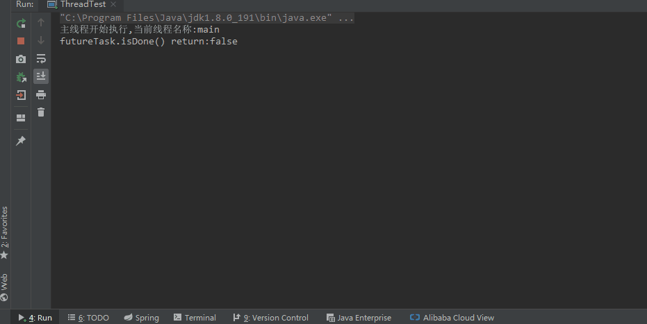

首先，定义Thread类的子类并重写run()方法：
package com.zwwhnly.springbootaction.javabase.thread;
public class MyFirstThread extends Thread {
@Override
public void run() {
for (int i = 0; i < 5; i++) {
System.out.printf("[MyFirstThread]输出:%d,当前线程名称:%s\n",
i, getName());
}
}
}然后，创建该子类的实例并调用start()方法启动线程：
package com.zwwhnly.springbootaction.javabase.thread;
public class ThreadTest {
public static void main(String[] args) {
System.out.println("主线程开始执行,当前线程名称:" +
Thread.currentThread().getName());
Thread firstThread = new MyFirstThread();
firstThread.start();
System.out.println("主线程执行结束,当前线程名称:" +
Thread.currentThread().getName());
}
}运行结果如下所示：
主线程开始执行,当前线程名称:main
主线程执行结束,当前线程名称:main
[MyFirstThread]输出:0,当前线程名称:Thread-0
[MyFirstThread]输出:1,当前线程名称:Thread-0
[MyFirstThread]输出:2,当前线程名称:Thread-0
[MyFirstThread]输出:3,当前线程名称:Thread-0
[MyFirstThread]输出:4,当前线程名称:Thread-0
从运行结果可以看出以下2个问题：
firstThread.start();，run()方法体中的代码并没有立即执行，而是异步执行的。查看Thread类的源码，可以发现Thread类实现了接口Runnable：
public class Thread implements Runnable {
// 省略其它代码
｝这里是重点，面试常问！
首先，定义Runnable接口的实现类并实现run()方法：
package com.zwwhnly.springbootaction.javabase.thread;
public class MySecondThread implements Runnable {
@Override
public void run() {
for (int i = 0; i < 5; i++) {
System.out.printf("[MySecondThread]输出:%d,当前线程名称:%s\n",
i, Thread.currentThread().getName());
}
}
}然后，调用Thread类的构造函数创建Thread实例并调用start()方法启动线程：
package com.zwwhnly.springbootaction.javabase.thread;
public class ThreadTest {
public static void main(String[] args) {
Runnable target = new MySecondThread();
Thread secondThread = new Thread(target);
secondThread.start();
}
}运行结果如下所示：
主线程开始执行,当前线程名称:main
主线程执行结束,当前线程名称:main
[MySecondThread]输出:0,当前线程名称:Thread-0
[MySecondThread]输出:1,当前线程名称:Thread-0
[MySecondThread]输出:2,当前线程名称:Thread-0
[MySecondThread]输出:3,当前线程名称:Thread-0
[MySecondThread]输出:4,当前线程名称:Thread-0
可以看出，使用这种方式和继承Thread类的运行结果是一样的。
首先，定义Callable接口的实现类并实现call()方法：
package com.zwwhnly.springbootaction.javabase.thread;
import java.util.Random;
import java.util.concurrent.Callable;
public class MyThirdThread implements Callable<Integer> {
@Override
public Integer call() throws Exception {
Thread.sleep(6 * 1000);
return new Random().nextInt();
}
}然后，调用FutureTask类的构造函数创建FutureTask实例：
Callable<Integer> callable = new MyThirdThread();
FutureTask<Integer> futureTask = new FutureTask<>(callable);最后，调用Thread类的构造函数创建Thread实例并调用start()方法启动线程：
package com.zwwhnly.springbootaction.javabase.thread;
import java.util.concurrent.Callable;
import java.util.concurrent.ExecutionException;
import java.util.concurrent.FutureTask;
public class ThreadTest {
public static void main(String[] args) {
System.out.println("主线程开始执行,当前线程名称:" +
Thread.currentThread().getName());
Callable<Integer> callable = new MyThirdThread();
FutureTask<Integer> futureTask = new FutureTask<>(callable);
new Thread(futureTask).start();
try {
System.out.println("futureTask.isDone() return:" + futureTask.isDone());
System.out.println(futureTask.get());
System.out.println("futureTask.isDone() return:" + futureTask.isDone());
} catch (InterruptedException | ExecutionException e) {
e.printStackTrace();
}
System.out.println("主线程执行结束,当前线程名称:" +
Thread.currentThread().getName());
}
}运行结果如下所示：
主线程开始执行,当前线程名称:main
futureTask.isDone() return:false
-1193053528
futureTask.isDone() return:true
主线程执行结束,当前线程名称:main
可以发现，使用Callable接口这种方式，我们可以通过futureTask.get()获取到线程的执行结果，而之前的2种方式，都是没有返回值的。
注意事项：调用
futureTask.get()获取线程的执行结果时，主线程会阻塞直到获取到结果。
阻塞效果如下图所示：

以下是重点，面试常问！
关于第2点，可以通过如下示例来理解。
假如我们总共有10张票（共享的资源），为了提升售票的效率，开了3个线程来售卖，代码如下所示：
package com.zwwhnly.springbootaction.javabase.thread;
public class SaleTicketThread implements Runnable {
private int quantity = 10;
@Override
public void run() {
while (quantity > 0) {
System.out.println(quantity-- + " is saled by " +
Thread.currentThread().getName());
}
}
}public static void main(String[] args) {
Runnable runnable = new SaleTicketThread();
Thread saleTicketThread1 = new Thread(runnable);
Thread saleTicketThread2 = new Thread(runnable);
Thread saleTicketThread3 = new Thread(runnable);
saleTicketThread1.start();
saleTicketThread2.start();
saleTicketThread3.start();
}因为3个线程都是异步执行的，因此每次的运行结果可能是不一样，以下列举2次不同的运行结果。
第1次运行结果：
10 is saled by Thread-0
8 is saled by Thread-0
7 is saled by Thread-0
5 is saled by Thread-0
9 is saled by Thread-1
3 is saled by Thread-1
2 is saled by Thread-1
1 is saled by Thread-1
4 is saled by Thread-0
6 is saled by Thread-2
第2次运行结果：
10 is saled by Thread-0
9 is saled by Thread-0
8 is saled by Thread-0
7 is saled by Thread-0
6 is saled by Thread-0
5 is saled by Thread-0
3 is saled by Thread-0
2 is saled by Thread-0
4 is saled by Thread-2
1 is saled by Thread-1
如果将上面的SaleTicketThread修改成继承Thread类的方式，就变成了3个线程各自拥有10张票，即变成了30张票，而不是3个线程共享10张票。
因为实现Runnable接口的优势，基本上实现多线程都使用的是该种方式，所以我们将之前定义的MyFirstThread也修改为实现Runnable接口的方式：
package com.zwwhnly.springbootaction.javabase.thread;
public class MyFirstThread implements Runnable {
@Override
public void run() {
for (int i = 0; i < 5; i++) {
System.out.printf("[MyFirstThread]输出:%d,当前线程名称:%s\n",
i, Thread.currentThread().getName());
}
}
}然后仍然沿用之前定义的MyFirstThread、MySecondThread，我们先看下调用start()的效果：
package com.zwwhnly.springbootaction.javabase.thread;
public class ThreadTest {
public static void main(String[] args) {
System.out.println("主线程开始执行,当前线程名称:" +
Thread.currentThread().getName());
Thread firstThread = new Thread(new MyFirstThread());
Runnable target = new MySecondThread();
Thread secondThread = new Thread(target);
firstThread.start();
secondThread.start();
System.out.println("主线程执行结束,当前线程名称:" +
Thread.currentThread().getName());
}
}运行结果（注意：多次运行，结果可能不一样）：
主线程开始执行,当前线程名称:main
[MyFirstThread]输出:0,当前线程名称:Thread-0
[MyFirstThread]输出:1,当前线程名称:Thread-0
[MySecondThread]输出:0,当前线程名称:Thread-1
主线程执行结束,当前线程名称:main
[MySecondThread]输出:1,当前线程名称:Thread-1
[MySecondThread]输出:2,当前线程名称:Thread-1
[MySecondThread]输出:3,当前线程名称:Thread-1
[MySecondThread]输出:4,当前线程名称:Thread-1
[MyFirstThread]输出:2,当前线程名称:Thread-0
[MyFirstThread]输出:3,当前线程名称:Thread-0
[MyFirstThread]输出:4,当前线程名称:Thread-0
可以看出，调用start()方法后，程序中有3个线程，分别为主线程main、Thread-0、Thread-1，而且执行顺序不是按顺序执行的，存在不确定性。
然后将start()方法修改为run()方法，如下所示：
firstThread.run();
secondThread.run();此时的运行结果如下所示（多次运行，结果是一样的）：
主线程开始执行,当前线程名称:main
[MyFirstThread]输出:0,当前线程名称:main
[MyFirstThread]输出:1,当前线程名称:main
[MyFirstThread]输出:2,当前线程名称:main
[MyFirstThread]输出:3,当前线程名称:main
[MyFirstThread]输出:4,当前线程名称:main
[MySecondThread]输出:0,当前线程名称:main
[MySecondThread]输出:1,当前线程名称:main
[MySecondThread]输出:2,当前线程名称:main
[MySecondThread]输出:3,当前线程名称:main
[MySecondThread]输出:4,当前线程名称:main
主线程执行结束,当前线程名称:main
可以看出，调用run()方法后，程序中只有一个主线程，自定义的2个线程并没有启动，而且执行顺序也是按顺序执行的。
以下是重点，面试常问！
在文章前面的章节中（1.2 实现Runnable接口 和1.3 实现Callable接口），我们了解了如何使用Runnable、Callable接口来创建线程，现在我们分别看下Runable和Callable接口的定义，其中，Runable接口的定义如下所示：
public interface Runnable {
public abstract void run();
}Callable接口的定义如下所示：
public interface Callable<V> {
V call() throws Exception;
}由此可以看出，Runnable和Callable的区别主要有以下几点：
源码地址：https://github.com/zwwhnly/springboot-action.git，欢迎下载。
Java Thread 的 run() 与 start() 的区别
如果觉得文章写的不错，欢迎关注我的微信公众号：「申城异乡人」，所有博客会同步更新。
如果有兴趣，也可以添加我的微信：zwwhnly_002，一起交流和探讨技术。